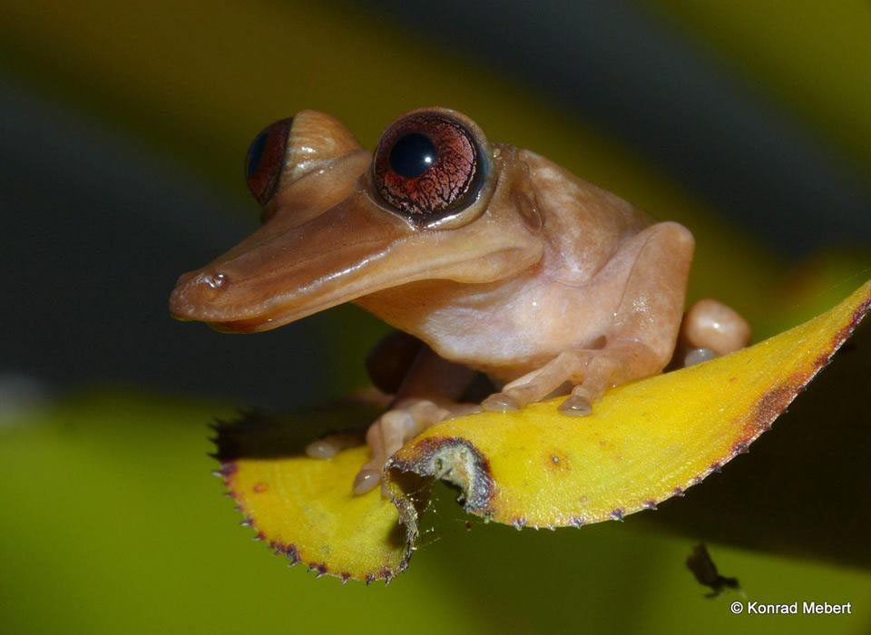
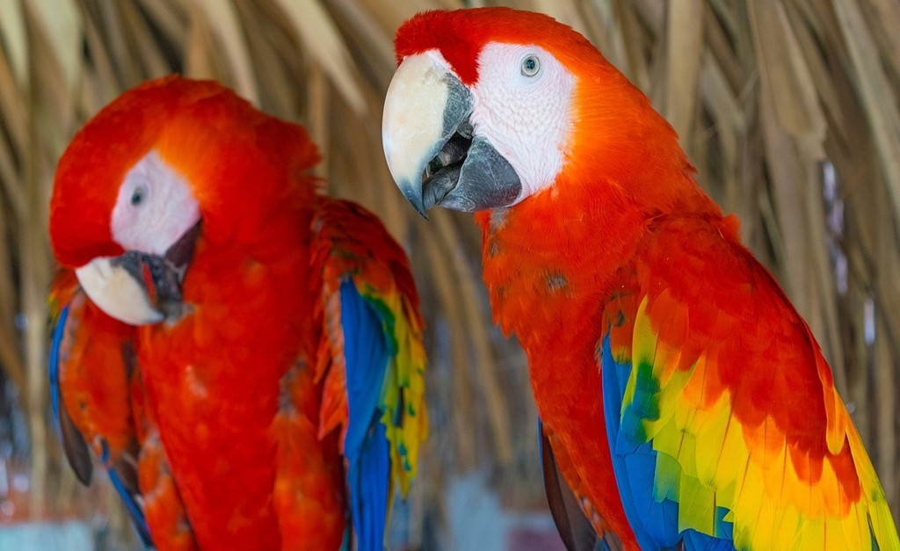

Welcome to Brazil!
Welcome to Brazil! Brazil is a place of wonder and scenery, not to mention a little bit of government corruption. But who cares when Brazil is the world's most biodiverse region? They have penguins, jaguars, tapirs, monkeys, wolves, dolphins, rodents, crocodiles, and many other animals! Brazil is the largest country in South America, and it has the second biggest river in the world in it! Brazil is famous for having the world's biggest Carnival!Christ the Redeemer is their most popular monument in Brazil, being a national symbol of Brazil, and one of the seven wonders of the world! Brazil has many different monuments, including the Sao Paulo Cathedral, Selaron Steps, Sugarloaf Mountain, Teatro Amazonas, and the Bandeiras Monument.

Brazil is the perfect place to go to if you want to see vibrant, unique animals! Personally, I would love a Brazilian Tree Frog. Brazil even has over 1600 bird species found nowhere else in the world! In total, Brazil homes over 27000 species. Brazil is a great place to go!